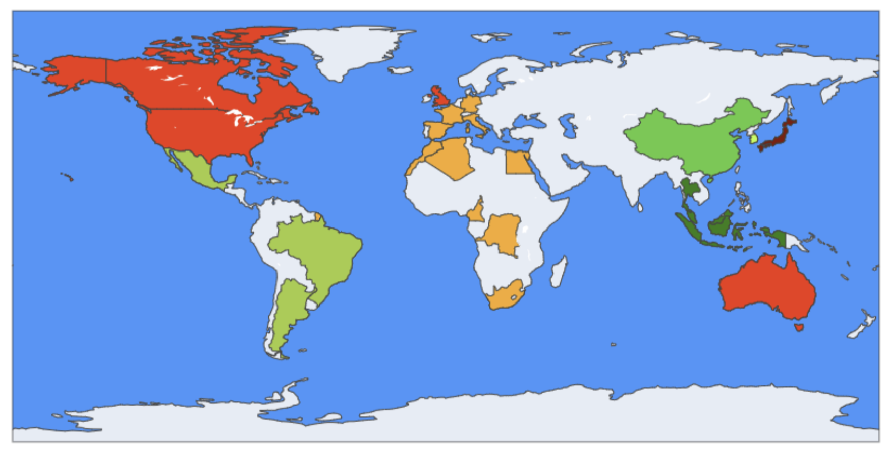

Tensions sociétales actuelles

Aperçu synthétique des craintes par région / pays
Basé sur des sondages récents (Ipsos[^1], KPMG[^2], Edelman[^3], Axios[^4]…), les niveaux de crainte face à l’IA varient significativement selon les régions, reflétant des contextes culturels et institutionnels distincts : dans l’anglosphère (États‑Unis, Canada, Royaume‑Uni, Australie), la nervosité est particulièrement marquée (≈ 45–50 %), alimentée par une faible confiance dans la régulation publique, des craintes d’atteintes à l’emploi et des deepfakes (The Guardian).
| Région/Pays | Niveau de crainte estimé |
|---|---|
| États‑Unis / Canada / Royaume‑Uni / Australie | 🔴 Fort (≈ 45–50 %) – plus nerveux que d’autres pays anglophones (The Guardian) |
| Europe continentale (France, Allemagne, Italie, Espagne) | 🟠Modéré (≈ 30–40 %) – moins anxieux que l’Anglosphère |
| Chine | 🟢 Bas (≈ 28 %) – forte confiance (72 % font confiance à l’IA) |
| Japon | 🔴 Très élevé (≈ 55–70 %) – forte inquiétude, baisse de confiance |
| Corée du Sud | 🟢 Plutôt faible/modéré (≈ 30–40 %), +90 % considèrent qu’il faut réguler |
| Reste de l’Asie du Sud‑Est (Indonésie, Thaïlande, Malaisie, etc.) | 🟢 Très faible (≈ 20–25 %), plus d’enthousiasme que d’inquiétude |
| Amérique du Sud (Brésil, Mexique, Argentine) | 🟢 Bas à modéré (≈ 25–35 %) – enthousiasme pour IA |
| Afrique du Sud | 🟠Modéré (≈ 35–45 %) – sur la moyenne |
| Afrique Centrale / Afrique du Nord (peu de données pays par pays) | 🟠Estimé modéré (≈ 35–50 %) – tendance similaire Afrique du Sud, avec forte demande de régulation |
L’Europe continentale présente une anxiété modérée (≈ 30–40 %), mais grâce à l’AI Act, la confiance dans une régulation efficace tempère ce phénomène . En Chine, la crainte reste basse (≈ 28 %), une majorité exprimant sa confiance (72 %) dans les bénéfices sociétaux de l’IA (en.wikipedia.org). Le Japon affiche une anxiété alarmante (≈ 55–70 %), avec un sentiment d’urgence face à l’IA malgré une faible compréhension . La Corée du Sud et le reste de l’Asie du Sud-Est (Indonésie, Thaïlande, Malaisie, etc.) sont nettement plus sereins : la Corée affiche un niveau modéré (≈ 30–40 %) mais un large soutien à la régulation, tandis que l’Asie du Sud-Est présente une crainte très faible (≈ 20–25 %) due à un enthousiasme marqué . En Amérique du Sud, la peur est globalement basse à modérée (≈ 25–35 %), portée par un grand enthousiasme envers l’IA (arxiv.org). Enfin, l’Afrique du Sud (≈ 35–45 %) et l’Afrique du Nord/Centrale (≈ 35–50 %) montrent une anxiété moyenne, associée à des demandes croissantes de régulation pour encadrer les technologies émergentes (The Guardian).
Recherche des causes premières
Les racines des inquiétudes vis-à -vis de l’IA varient fortement selon les régions : dans l’anglosphère (États‑Unis, Royaume‑Uni, Canada, Australie), la méfiance est élevée, alimentée par une faible confiance dans la capacité des gouvernements à réguler, ainsi que par la crainte de pertes d’emploi et d’abus tels que les deepfakes (PMC, The Guardian).
% de la population exprimant de la crainte face à l'IA

En Europe continentale, l’anxiété est modérée mais tempérée par une forte foi dans des cadres comme l’AI Act (PMC). Par contraste, en Asie émergente (Chine, Asie du Sud‑Est), l’enthousiasme et la confiance sont élevés, portés par un usage valorisé de l’IA et une structure institutionnelle solide . Le Japon, malgré une compréhension limitée, manifeste une peur exacerbée, en raison d’un profond souci des perturbations sociales (KPMG Assets).
Enfin, en Afrique et Amérique du Sud, on observe un équilibre fragile : l’espoir d’inclusion et d’opportunités coexiste avec les craintes d’exclusion, de coûts excessifs et de dérives en matière de surveillance .
Niveaux de crainte sur l’IA estimés (vue planisphère)

Références
[^1]: Ipsos – Global AI Monitor 2024
- Dans 15 pays, ≈ 50 % des répondants déclarent que l'IA les rend nerveux, 53 % expriment de l'excitation
- Global survey (34 pays) : 27 % craignent un programme IA « renégat » à l’échelle mondiale
- Les pays anglophones sont significativement plus inquiets que la majorité des pays de l'UE et d’Asie du Sud-Est
→ Source
[^2]: KPMG & Université de Melbourne – Global Study 2025
- Les économies émergentes font davantage confiance à l’IA que les économies avancées
- Forte adoption au travail (≈ 58 %), souvent non déclarée
- Inquiétudes sur l’exactitude et la surveillance des données
→ Reuters
[^3]: Edelman Trust Barometer 2025
- 72 % des Chinois font confiance à l’IA, contre seulement 32 % des Américains
→ Rapport
[^4]: Axios / Harris 100 – Mai 2025
- 77 % des Américains souhaitent un déploiement plus lent de l’IA, privilégiant la fiabilité à la rapidité
→ Axios